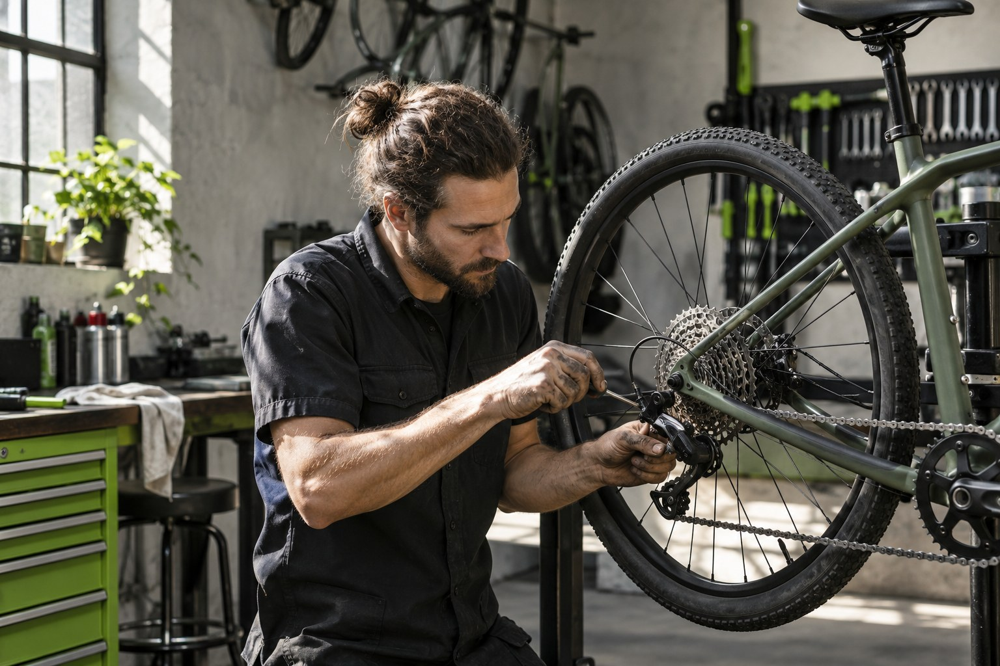

Hilf uns beim Hinhören. Welches Geräusch macht dein Rad?
Beim Treten oder beim Rollen? Merke dir, wann es auftritt.
Nur beim Bremsen oder bei jeder Radumdrehung?
Auf Kopfsteinpflaster oder auch auf glatter Straße?